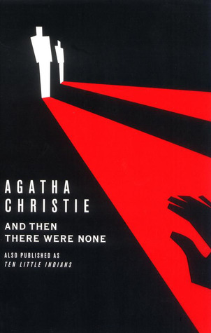

- Home
- Browse
Mystery Stories
Read the stories we love


 The Maltese Falcon
The Maltese Falcon
by Dashiell Hammett
Ratings
Sam Spade takes a job for Miss Wonderley to find her sister who has eloped but finds himself embroiled in a hunt for the jewel-encrusted Maltese Falcon. Both hunter and hunted, Spade must track down this treasure that is worth killing for before the Fat Man finds him. The Girl With The Dragon Tatto
The Girl With The Dragon Tatto
by Stieg Larsson
Ratings
A run-away bestseller, The Girl with the Dragon Tattoo has everything a mystery requires. Murder, family ties, love in the air, and financial shenanigans. What happened to Harriet Vanger who disappeared forty years ago? Mikael Blomkvist, a disgraced journalist, and Lisbeth Salander, a tattooed and pierced hacker genius, are on the case. They uncover family iniquity and corruption at the top of Sweden’s industrial ladder. And then There Were Noneby Agatha Christie
Ratings
Ten people, strangers, gather on a private island as weekend guests of an unseen eccentric millionaire. These strangers have secrets to keep, but one by one they are murdered. They all have something in common, though—they each have a wicked past they’re hiding, a secret that seals their fate. Only the dead are above suspicion. Rebecca
Rebecca
by Daphne Du Maurier
Ratings
The dashing widower Maxim de Winter sweeps the heroine off her feet and into a sudden marriage, which seems beyond good luck for her. Orphaned and working as a lady’s maid, she is astonished at his massive country estate. Little does she know his late wife casts a huge shadow over everything in her new life. Rebecca presents a lingering evil that could destroy their new marriage from beyond the grave. Gone Girl
Gone Girl
by Gillian Flynn
Ratings
Nick and Amy Dunne seem to have it all, but Amy goes missing on their fifth wedding anniversary. All indications point to Nick, and as the police and media close in on him, things take a new turn. Amy isn’t who everyone thought she was, but neither is Nick. As lies, deceits, and inappropriate behavior stack up, you’re left to wonder if Nick is really a killer.The Woman In White
by Wilkie Collins
Ratings
The book opens with an other-worldly encounter on a moonlit London road with a woman dressed in all white. Walter Hartright is the drawing master for Laura Fairlie and becomes involved in the sinister motivations of Sir Percival Glyde and Count Fosco. The Woman in White was the first, influential Victorian novel that combined Gothic horror with psychological realism.The Therteenth Taleby Diane Seterfield
Ratings
Author Vida Winters spent her career creating outlandish life histories for herself that kept her violent and tragic past a secret. Now that she’s old and ailing, she wants to tell the truth and summons biographer Margaret Lea. Margaret has her own secret past that bothers her, which curiously parallels Vida Winters’ story. She demands the truth from Vida, and together they confront their ghosts.The Firmby Jhon Grisham
Ratings
Mitch McDeere is ambitious, young, and very intelligent. He gets a job with the law firm Bending, Lambert, and Locke that offers him money and power. But soon Mitch uncovers that the firm is listening to all his phone calls, and the FBI is knocking on his door. Money and power has a price. Mitch is finding out it could be his life.Eye Of The Needleby Ken Follet
Ratings
Code named "The Needle," a brilliant aristocrat and ruthless assassin holds the key to the Nazi’s ultimate victory. One enemy spy knows the secret to the Allies’ greatest deception, The Needle. A lonely Englishwoman on an isolated island is the only person standing in way of The Needle. And she’s beginning to love this killer who mysteriously entered her life. The GodFather
The GodFather
by Mario Puzo
Ratings
Epic story of crime and betrayal, The Godfather was a best-seller almost half a century ago. It portrayed the Mafia underworld through the first family, the Corleones. The book follows their powerful legacy of blood, honor, and tradition and seduced by power, the pitfalls of greed, and above all else, loyalty to the family.